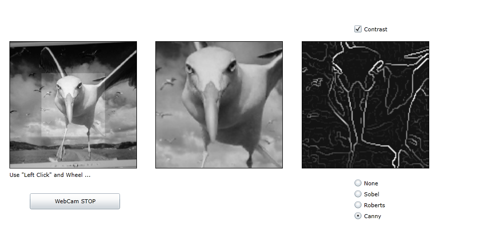
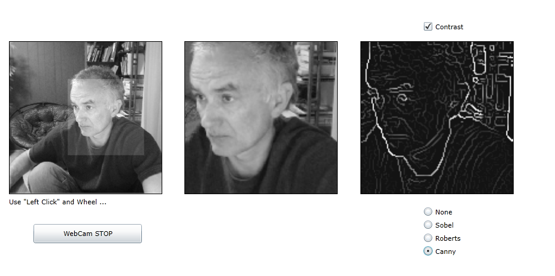
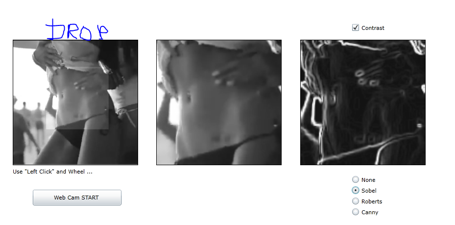

Edge Detector - by Sobel / Roberts / Canny Detectors..
Edge Detector - from WebCam or Drag and Drop File ... Image Contrast , Cut Image ...



For Drag and Drop File see below .
https://code.msdn.microsoft.com/windowsapps/Edge-Detector-Silverlight-894611d7/https://msdn.microsoft.com/en-us/library/gg192793(v=vs.95).aspx
For X64 - need to use QWORD ...
To enable in-browser trusted applications
- Configure the target computers to allow trusted applications inside the browser by setting the following registry key:
- Key path for 32-bit computers: HKEY_LOCAL_MACHINE\Software\Microsoft\Silverlight\
- Key path for 64-bit computers: HKEY_LOCAL_MACHINE\Software\Wow6432Node\Microsoft\Silverlight\
- Value name: AllowElevatedTrustAppsInBrowser
- Value type: DWORD
- Valid Values:
- Disabled - 0x00000000
- Enabled - 0x00000001
- Ensure that you do not set conflicting registry keys. For more information, see the AllowInstallOfElevatedTrustApps and AllowLaunchOfElevatedTrustApps registry keys in
Group Policy Settings. Specifically, you can disallow the installation of trusted applications without affecting their in-browser use. However, disallowing the launch of trusted applications will cause
them to run in partial trust, even inside the browser.
- Sign the .xap files with a valid, code-signing certificate. For more information, see the "Application Signing" section of
Trusted Applications.
- Install the certificate to the Trusted Publishers certificate store and (if necessary) the Trusted Root Certification Authorities store. For more information, see
Deploying Certificates to the Trusted Publishers Store.